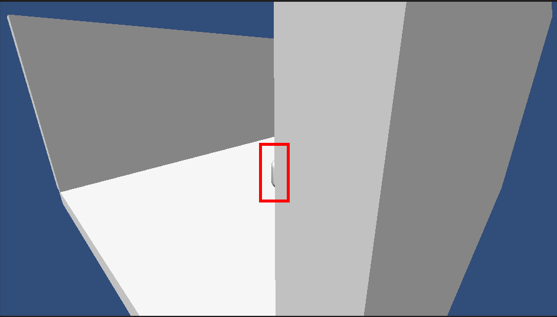
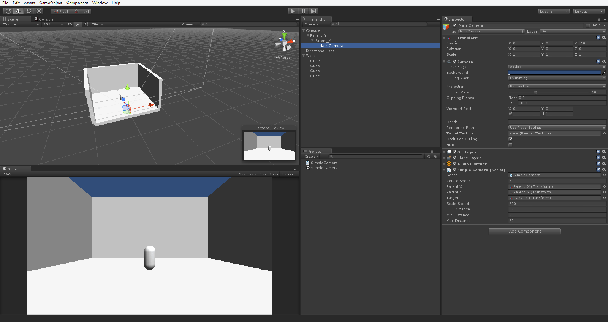

很久沒有寫些東西了
這次分享一個簡單的相機穿牆解決方法
有時候我們在寫第三人稱的遊戲時
會發現相機會有穿牆問題發生
如下圖的情況，相機被牆壁擋住所以無法照到腳色

為了避免這個問題
提供以下 Script
using UnityEngine;
using System.Collections;
public class SimpleCamera : MonoBehaviour
{
public float rotateSpeed = 50;
public float scaleSpeed = 200;
public Transform parentX;
public Transform parentY;
public Transform target;
public float curDistance = 15;
public float minDistance = 5;
public float maxDistance = 20;
private Transform m_transform;
private Vector3 m_rayDirection;
private RaycastHit m_hit;
private Ray m_ray;
void Awake()
{
m_transform = transform;
curDistance = Vector3.Distance(m_transform.position, target.position);
}
void Update()
{
CameraRotateUpdate();
CameraCollisionUpdate();
}
private void CameraRotateUpdate()
{
parentX.Rotate(Input.GetAxis("Mouse Y") * rotateSpeed * Time.deltaTime, 0, 0);
parentY.Rotate(0, Input.GetAxis("Mouse X") * rotateSpeed * Time.deltaTime, 0);
}
private void CameraCollisionUpdate()
{
m_rayDirection = m_transform.position - target.position;
m_rayDirection.Normalize();
m_ray = new Ray(target.position, m_rayDirection * curDistance);
if(Physics.Raycast(m_ray, out m_hit) && m_hit.collider.name.Contains("Cube"))
{
m_transform.localPosition = Vector3.Lerp(m_transform.localPosition, Vector3.back * Vector3.Distance(m_hit.point, target.position), Time.deltaTime * 20);
}
else
{
curDistance -= Input.GetAxis("Mouse ScrollWheel") * scaleSpeed * Time.deltaTime;
curDistance = Mathf.Clamp(curDistance, minDistance, maxDistance);
m_transform.localPosition = Vector3.back * curDistance;
}
}
private void OnDrawGizmos()
{
Gizmos.color = Color.red;
Gizmos.DrawLine(m_transform.position, target.position);
}
}完成後設置如圖

簡易的穿牆避免到這就完成了